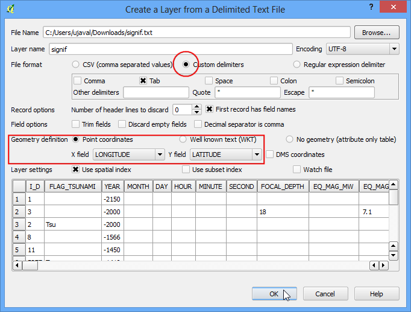
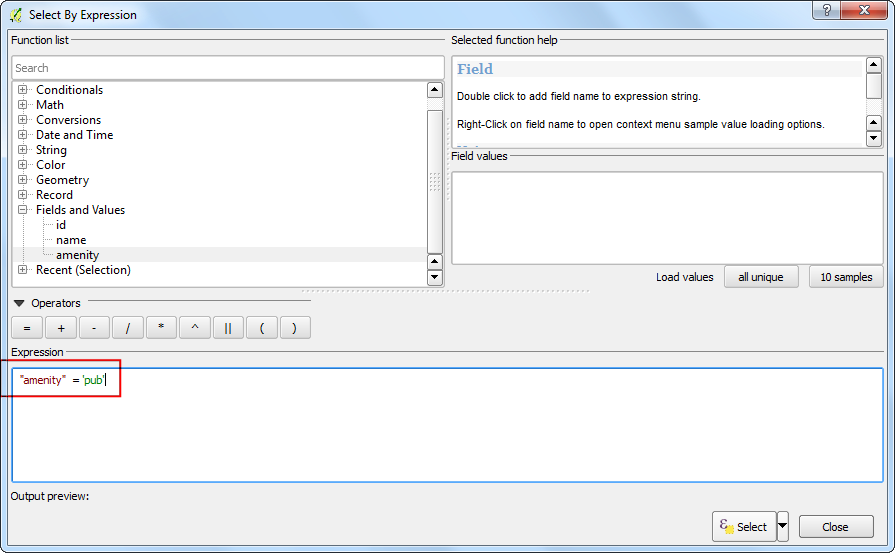
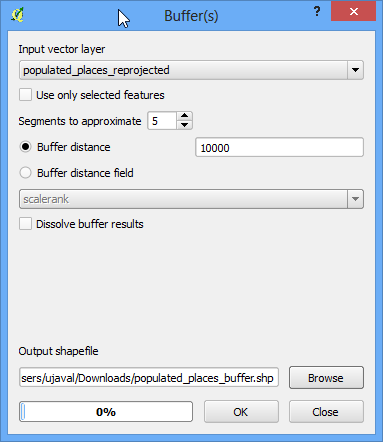
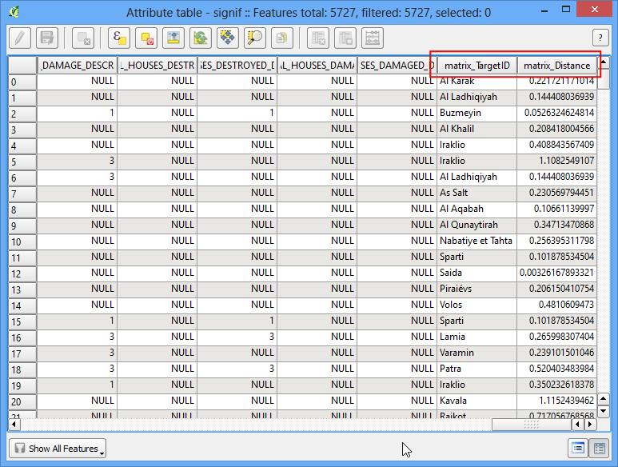
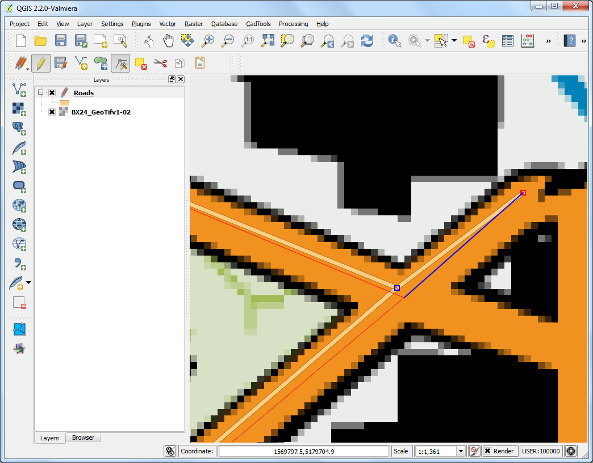
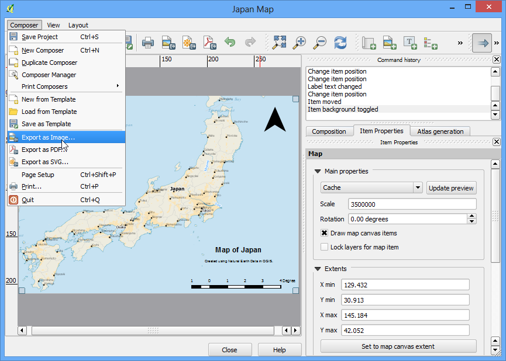
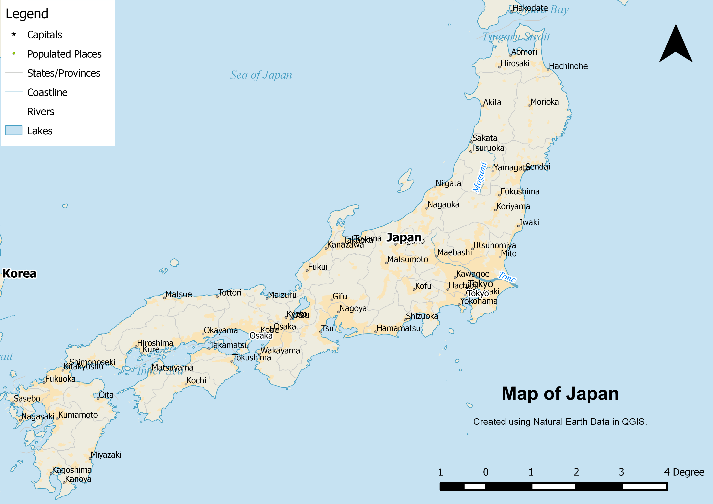
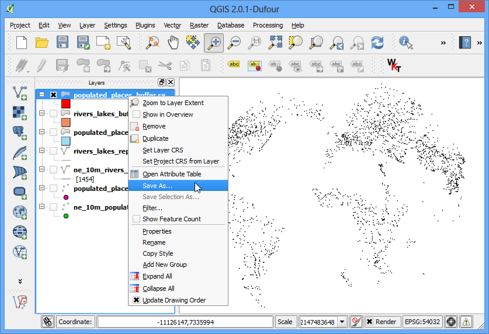
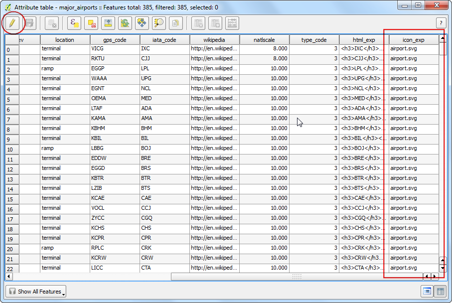
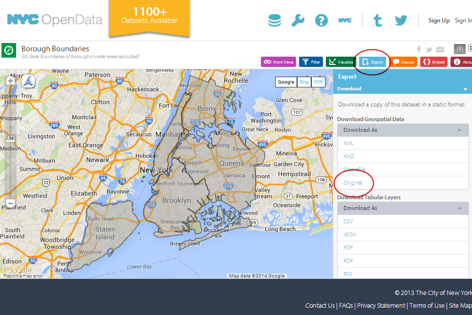

Performing Spatial Queries¶
Spatial queries are core to many types of GIS analysis. In QGIS, this functionality is available via the Spatial Query plugin.
Overview of the task¶
We will be working with 2 datasets - a lines layer representing rivers and a point layer representing cities. The task is to run a spatial query to find all cities that are within 10 kms of a river.
Other skills you will learn¶
- Opening .zip files directly in QGIS.
- Choosing an appropriate projection and re-projecting vector data.
- Creating buffers.
- Selecting features using SQL-like expressions.
- Coverting a shpefile to a KML file.
- Validating your results using Google Earth.
Get the data¶
We will use ne_10m_rivers_lake_centerlines and 10m_populated_places_simple datasets from Natural Earth.
Download Rivers and Lake Centerlines
Download Populated Places.
Procedure¶
- Once you have downloaded the data, open QGIS. Go to Layer ‣ Add Vector Layer.

- Click Browse and navigate to the folder where you downloaded the zip files.

- Hold the Shift key and click on both the zip files to select them. Click Open.

- You will be asked to choose a layer from the zip archive. Select ne_10m_rivers_lake_centerlines.shp and click OK.

- Since you have selected multiple files, repeat the process for the next file. Select 10m_populated_places_simple.shp and click OK.

- You will see both the shapefiles now loaded in QGIS.

- We will be created buffers around the point and line layers. The Buffer geoprocessing tool in QGIS uses layer units to calculate buffer distances. The layers we have are in Geographic Coordinate Reference System (CRS) with the unit of degrees. This is not appropriate as we want our analysis to use metres or kilometres. To achive this, we must re-project our layers to a Projected Coordinate Reference System (CRS). Right-click on the 10m_populated_places_simple layer and choose Save As.

- In the Save vector layer as... dialog, click Browse next to Save as and select the output file location. Name the output file as populated_places_reprojected.shp. Next, click the Browse button next to CRS.

- Now we must choose an appropriate CRS for our purpose. For creating buffers, a Azimuthal Equidistant projection would be best suited as radial distances around the center of the projection are accurate. In our case, since the dataset is global, we will choose a world projection. In the Coordinate Reference System Selector dialog, start searching for world az.. and you will see the results show up. Select the World_Azimuthal_Equidistant and click OK.
Note
The World_Azimuthal_Equidistant projection spans 90 degrees from the origin. Here the origin being 0 degrees longitude, the only data contained within +/- 90 degrees longitude will be converted.

- Back in Save vector layer as ... dialog, check the box next to Add saved file to map and click OK.

- Repeat the re-projection process for the ne_10m_rivers_lake_centerlines layer and save the new layer as rivers_lake_reprojected.shp.

- Now you will have 4 layers in your Layers Panel. Un-check the boxes next to the original layers to display only the re-projected layers. The re-projected layers are still being shown in the Geographic CRS because of a setting. Let’s turn that off. Click on the Project Properties button. This setting can also be accessed from Project ‣ Project Properties.

- In the CRS tab of the Project Properties dialog, un-check the box next to Enable on-the-fly CRS transformation. Click OK.

- Back in the main QGIS window, right-click on any one of the re-projected layers and select Zoom to Layer Extent.

- Now you will see the data in the layer’s CRS. We will now create buffers for both the datasets. Click Vector ‣ Geoprocessing Tools ‣ Buffer.

- In the Buffer tool, select populated_places_reprojected layer as Input. Enter the buffer distance as 10000. Note that we want a buffer of 10kms and since the CRS units are metres, we need to enter 10,000. Enter the output file name as populated_places_buffer.shp. Click OK.

- Once the buffer processing is over, click the Yes to add the newly created layer to the TOC.

- Repeat the same buffer process for the rivers_lake_reprojected layer and create an output file named rivers_lake_buffer.shp.

- The rivers_lake_buffer contains features that are both rivers as well as lakes. Our analysis calls for using only river features, so we will run a query to select only river features. Right-click on the rivers_lake_buffer layer and select Open Attribute Table.

- You will see that the featurecla attribute contains the information we can use to select the river features. Click on Select features using an expression button.

- Enter the expression “featurecla” = “River” and click Select and then click Close to back to the main QGIS window.

- Now we are ready to perform the spatial query. You need to enable the Spatial Query plugin to use this functionality. See Using Plugins for more details. Once enabled, go to Vector ‣ Spatial Query ‣ Spatial Query.

- For our query, we want to select features from the buffered places that intersect with the buffered river lines. Make sure the checkbox next to selected geometries is checked. This is to ensure the query uses only river features that we selected previously. Click Apply.

- Once the query is complete, you will see a new section named Selected features. Click on the Create layer with selected button. A new layer will be added to the Layers Panel. Click Close.

- Zoom-in to any area and compare the results. You will notice that only the features that intersect with river buffers.

- We should always verify my results to ensure the analysis is not flawed. One way to verify the results is to export this layer as a KML file and load it up in Google Earth. You can check if the areas you found really are within 10kms of a river. Right-click the layer and Save As....

- In the Save vector layer as..., choose WGS84 as the CRS. This because KML format needs the coordinates to be in this CRS. Name your KML as cities_near_river.kml.

- Open Google Earth and verify that the cities represented by these buffers are indeed close to rivers.
